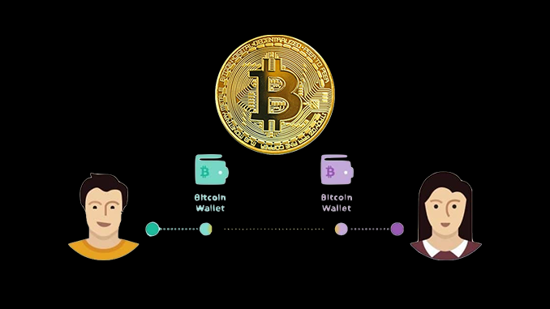
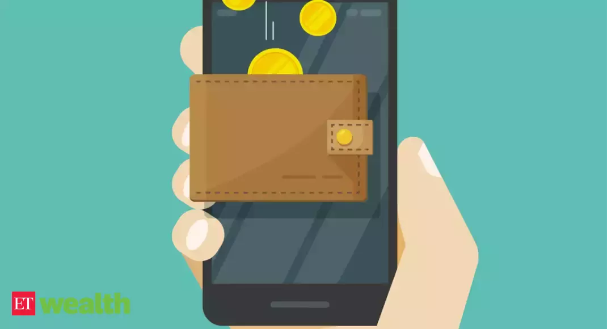

Blockchain
- Block
- chain
What is Bitcoin Blockchain
The Bitcoin blockchain is a continuous a chain of blocks that is built with specific rules and contains information about transactions carried out on the network. Most often, copies of block chains that are not depend on each other are in parallel, and their processing is carried out from different PCs.
How Review Observations Work in the Blockchain
1. Users initiate a bitcoin payment using special software, the so-called "wallets"

2. All major transactions are sent to the global bitcoin network
3. Approximately every 10 minutes, computers that are part of the global set (miners) combine several hundred transactions into a "block"
4. Miners confirm a new transaction, thereby legitimizing it
5. For their work in the form of spent computing power, miners receive a reward in the form of emitted bitcoins.
6. The next block is added to the general transaction database of the bitcoin network (blockchain)
7. The receipt of new funds will be reflected in the recipient's wallet
Blockchain essentially consists of only from transaction history. He is not stores the balance of each wallet, otherwise we would have to invent additional ways to protect
Any blockchain exists only while there are its miners who solve computational problems. These tasks should be enough simple so that network participants have stable probability of finding the answer - otherwise transactions will be confirmed eternity.
Mining is when thousands of computers basements are buzzing all over the world, sorting through millions of numbers per second, trying to pick up a hash starting with 10 zeros For finding the answer the computer (according to data for 2017) receives 12.5 BTC - is the amount of the reward generated system bitcoin "from air" and decreases every four of the year.
Miners who mine virtual money, use processors for these purposes, video cards and other equipment. Last thing takes over the calculation option for searching hash. After it is selected, it closes. block. The blockchain chain is distributed and supported by millions of computers the whole planet.
The reliability of the blockchain chain is provided by special algorithms:
proof of work
proof-of-stake
In the Bitcoin blockchain, the first option is used. Its principle of operation is similar to processes that take place in the office. If an employee of an organization completed the work, he will not be given wages. Algorithm PoW checks the calculations that are made when creating items chains. The system recognizes a block if its hash parameter is below the signature, which the miners were looking for. In other words, the correctness of the block calculated according to a special code, and the control of work is assigned to full nodes.
Types of blockchain
Public - a chain of blocks, which available others users. This type of chain used in bitcoin
Service - chain of blocks available to all users, but their quantity is limited.
Private - a chain where access limited to reading and writing. Here priority setting available nodes. Such a blockchain involves limited group of people who are processing transactions.
Blockchain Pros
Decentralization. Network members have equal rights and able to communicate directly with each other other, without the participation of intermediaries.
Reliability. The likelihood of hacking by intruders or replacement information in the blocks is excluded, due to the use of encrypted keys.
Transparency. The blocks of the blockchain chain are open to users, and transactions are easy to verify.
Versatility. Blockchain is a unique technology that can be applied not only in the financial sector, but also in other areas.
High speed. The possibilities of blockchain technology allow reduce transaction time to one minute.
Low commissions. Due to the absence of commission payments, transaction fees are minimal.
Blockchain cons
Irrevocability. Cancel the operation if it done by mistake, it won't work.
Attack risk. If 51 percent of the Bitcoin chain is own one user, network integrity can be violated.
Scalability. With the current block size the system processes up to seven operations in 1 second. FROM growth in the number of users of this indicator becomes few.
status uncertainty. Many countries do not determined with the use of technology, and the question Cryptocurrency regulation is open until today day.
Applications
Blockchain technology can be used not only in the financial world, but also in a number of other areas of life:
- For protection of authorship and identification personality.
- When voting.
- In jurisprudence and management activities
- In the real estate sector
- In the stock exchange and in the service sector, etc.
So, Blockchain is one of the most important innovations since inception Internet. Possibilities of blockchain technology vast and can change forever the world for the better, affecting all areas life.